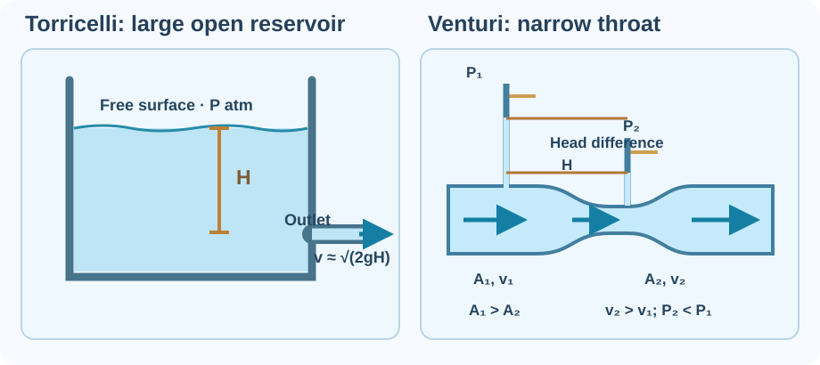

Connect the ideal pressure–speed–height model to atomizers, filter pumps, tank outlets, Venturi meters, wings and spinning sports balls — while testing when textbook calculations are physically justified.
V95-B6 public study preview — not a completed or teacher-approved Unit 6 course. This new teaching page is based on the owner’s private Topic 6.6 prepared master (combined pp.243–273), merged V94-C2.6 audit and supplied FBISE framework. Original NBF printed pp.101–106, Figures 6.10–6.15 and exact wording of Example 6.4 / Assignment 6.4 still await complete comparison. The diagram below is independently drawn; exercises use prepared-master data but are not verbatim NBF transcriptions. Individual MCQ classifications remain provisional.
P-11-B-40Apply Bernoulli’s equation to horizontal and vertical fluid flowSummative · Application
P-11-B-39Explain pressure differences associated with different flow ratesFormative · Application · Not an independent final-theory-exam SLO
SLO classifications from the official teacher-supplied HSSC-I framework pp.11–12; not individual-question FBISE certification.
01 · START WITH A VALID MODEL
What Bernoulli explains — and what it cannot
For steady, incompressible, effectively inviscid fluid flow along one streamline, with negligible energy loss and no pump/turbine work between the selected points, the mechanical energy per unit volume stays constant:
P + ½ρv² + ρgh = constantP is static pressure (Pa); ρ density (kg/m³); v speed (m/s); h vertical elevation (m).
At equal elevation along the same ideal streamline, P₁ − P₂ = ½ρ(v₂² − v₁²). That relates static pressure and speed but is not a universal rule that the fastest point anywhere has the lowest pressure. Real turbulent mixing, boundary layers and viscous losses change the situation.
In this topic, we move from mathematical relations to devices. For each one, first identify which fluid, which pressure comparison, which height difference and which assumptions are being used.
02 · PRESSURE-DRIVEN DEVICES
Air-jet atomizer and filter pump
Air-jet or bulb atomizer
A fast jet of air passes near the mouth of a liquid tube. Under suitable conditions the local static pressure falls below the reservoir pressure, which pushes liquid up the tube. Droplet breakup happens after the liquid reaches the jet.
Mechanical perfume-pump bottle
A manually pressed liquid-pump sprayer creates pressure mechanically. It is not automatically an air-jet atomizer. Identify its apparatus before applying the Bernoulli suction explanation.
Water-jet filter pump
Fast water and subsequent mixing can draw gas out of a connected vessel, producing a partial vacuum. Entrainment, leaks and losses matter; Bernoulli alone does not give an exact evacuation rate or perfect vacuum.
A supplementary *static-head estimate* for lifting a liquid column of vertical height H uses ΔP ≈ ρliquidgH. This neglects losses, tube effects and the dynamics of atomization; it is not a complete spray-rate formula.
ΔP ≈ ρliquidgHSupplementary minimum static lifting-head estimate; not an NBF numbered atomizer derivation.
Another common confusion: Natural chimney draft often depends strongly on the buoyancy of warm gas. Wind can modify it, but the stack effect is not solely a universal Bernoulli-suction mechanism.
03 · NBF §6.6.3 · STEPWISE DERIVATION
Torricelli’s theorem: why a tank opening ejects water

Independent teaching schematic, not a copy of original NBF Figures 6.10–6.15. All pipes and arrows are qualitative, not to scale. Venturi head assumes both open pressure tubes contain the flowing liquid.
Consider an open large reservoir with a small outlet. Section 1 is the free surface, section 2 the opening. Both are exposed to the same atmospheric pressure, and the large tank cross-section makes the free-surface speed negligible compared with the jet.
Define the vertical head H: H = h₁ − h₂, giving 2gH = v₂² after cancelling ρ.
Use the nonnegative speed: v₂ = √(2gH).
v = √(2gH)Ideal efflux speed (m/s), H is vertical free-surface-to-opening height (m), g in m/s².
For a specified physical opening area A, the supplementary ideal discharge is Q = A√(2gH), in m³/s. Real jets experience friction, contraction and other losses. If the water level falls with time, H and the instantaneous exit speed change; this simple expression does not automatically give a constant tank-draining rate.
04 · NBF §6.6.4 · STEPWISE DERIVATION
Venturi effect: area, speed and pressure
A Venturi meter has a wider upstream cross-section A₁ and a narrower throat A₂, with A₂ < A₁. For ideal steady incompressible horizontal flow without leaks, v₂ is greater than v₁.
Use a same-liquid open-piezometer difference: ΔP = P₁ − P₂ = ρgH, provided both columns contain the flowing liquid and open to the same atmosphere.
Cancel ρ, isolate v₁², and take positive square root: v₁ = √{2gH/[(A₁/A₂)² − 1]}.
v₁ = √{2gH/[(A₁/A₂)² − 1]}Use only A₁ > A₂, H ≥ 0 and the same-liquid open piezometer/ideal model assumptions.
v₂ = (A₁/A₂)v₁; ΔP = ½ρ(v₂² − v₁²)If diameters are given, A₁/A₂ = (d₁/d₂)², not d₁/d₂. ΔP = ρgH is not generally the unchanged formula for a two-fluid differential manometer.
Model limit: If A₁ = A₂ the denominator in the head-based inlet-speed formula is zero; the ideal meter has no throat-induced pressure difference and this equation cannot infer speed. Real devices require calibration for viscous losses, fluid mixing and geometry.
05 · WINGS AND SPORTS BALLS
Aerofoil lift and the Magnus effect
What produces aerodynamic lift?
An aerofoil changes pressure and velocity around its surfaces and redirects airflow. The net aerodynamic force depends on the distribution of pressure and shear forces and the resulting momentum transfer. A useful classroom *uniform pressure-difference approximation* is:
ΔP ≈ ½ρ(vupper² − vlower²); F ≈ ΔP ATeacher's simplified wing-numerical model; not a complete aerodynamic lift formula or aircraft certification.
There is no general equal-transit-time rule requiring air going above and below a wing to meet simultaneously at the trailing edge. A longer upper path alone does not explain lift.
Compulsory physical warning — prepared NBF Assignment 6.4: The given airspeeds of 450 m/s above and 410 m/s below lead to a formal 998,460 N using the stated constant-density toy formula, but these speeds are around/above typical speed of sound in air. Compressibility and real wing flow become crucial. Do not report 998,460 N as a verified real-aircraft lift prediction. The prepared result is preserved for algebraic study, not endorsed as real-flight physics.
Why do spinning balls curve? — Magnus effect
A spinning cricket ball or golf ball modifies the relative airflow on opposite sides. The resulting asymmetric pressures and momentum transfer can generate a transverse aerodynamic force, curving the flight. Its direction depends on the spin orientation, motion and fluid-flow details. Reversing spin can reverse the sideways curve.
No universal quantitative Magnus-force equation is derived in the owner-prepared §6.6 chapter. It would be misleading to calculate an exact Magnus force from Bernoulli’s 1D expression alone without additional aerodynamic data and assumptions.
06 · WORKED APPLICATIONS
Eight numerical problems with every model condition
The first six selected applications below include teacher-created practice and the prepared-master numerical givens attributed to original NBF Example 6.4 and Assignment 6.4. The last two are teacher-developed supplements. Exact original printed wording and figures on pp.101–106 have not been independently compared; none is labelled verbatim NBF text.
Teacher-developed Torricelli practice
Outflow speed from a 5.0 m vertical head
Given H = 5.0 m, g = 9.8 m/s². Reservoir open, large and ideal.
v = √(2gH) = √(2 × 9.8 × 5.0) = √98.
v ≈ 9.90 m/s, ideal exit speed; not a measured discharge.
Teacher-developed Torricelli practice
Height needed for 7.0 m/s efflux
Rearrange v² = 2gH to H = v²/(2g).
H = 7.0²/(2 × 9.8) = 49/19.6 = 2.50 m.
This is a vertical height difference, not distance along a sloped tank wall.
The inlet-to-throat area ratio A₁/A₂ is 2.0; the measured pressure-head difference is H = 0.30 m and g = 9.8 m/s². Assume same-liquid open piezometers.
F ≈ ΔP A = 22,188 × 45 = 998,460 Nformal simplified result only.
Physical limitation: The speeds are far too high to trust the simple incompressible-air/constant-ΔP wing model for actual aircraft performance. Preserve the supplied educational arithmetic; never interpret this as a credible measured flight-lift force.
Liquid density ρ = 800 kg/m³, H = 0.15 m and g = 9.8 m/s².
Minimum ideal static pressure head ΔP ≈ ρgH.
ΔP ≈ 800 × 9.8 × 0.15 = 1176 Pa ≈ 1.18 kPa.
This is not the atomizer's actual spray-rate prediction.
07 · EXPLORE THE MATHEMATICS
Three interactive ideal-model calculators
A. Torricelli — tank head and ideal jet
Assumes a large open tank, same atmospheric pressure at the surface/outlet, negligible surface speed and no losses; an actual tank with falling level does not keep this head fixed.
B. Venturi — throat speed and static pressure drop
This is a same-elevation, steady, incompressible and loss-free model. For same-liquid open piezometers only, H = ΔP/(ρg). Do not treat the same relation as a universal two-fluid manometer formula.
C. Wing — classroom uniform pressure-difference model
Do not use for aircraft design. This deliberately simplified constant-density/constant-ΔP calculation does not establish actual wing pressure distributions, lift, stability or compressible high-speed behaviour. The 450/410 m/s exercise is especially physically unsuitable as an incompressible-air prediction. The three calculators run locally and save or transmit no student data or grades.
08 · ACTIVE REVISION
Ten questions with revealable answers
1. What pushes liquid up an air-jet atomizer tube?
Fast air can reduce static pressure at the tube mouth. The higher reservoir pressure pushes liquid up; subsequent jet mixing breaks it into droplets.
2. Is a push-button mechanical perfume bottle necessarily an air-jet atomizer?
No. A mechanical liquid pump increases liquid pressure by an entirely different mechanism. Identify the apparatus before making the Bernoulli argument.
3. Does a water-jet filter pump produce a perfect vacuum?
No. It makes a partial vacuum by gas entrainment and low-pressure flow; mixing, vapor pressure, leaks and losses set real limitations.
4. Which pressure and speed assumptions lead to Torricelli’s v = √(2gH)?
The free surface and outlet are open to the same atmosphere, the tank is much wider than the outlet, surface speed is negligible, and ideal mechanical-energy losses are neglected.
5. In a Venturi, why is throat speed greater than inlet speed?
Steady incompressible continuity A₁v₁ = A₂v₂ requires higher speed through the smaller throat area. Horizontal ideal Bernoulli then links that speed difference to lower throat static pressure.
6. Why does a diameter ratio need to be squared in Venturi calculations?
A circular section has area A = πd²/4; therefore A₁/A₂ = (d₁/d₂)². In the pressure equation the complete area ratio is squared again.
7. Can ΔP = ρgH be used unchanged for any manometer?
No. The given textbook Venturi relation assumes two open pressure columns containing the same flowing liquid. A different manometer liquid requires separate hydrostatic analysis.
8. Does air over a wing have to meet the lower air at the trailing edge at the same time?
No. The equal-transit-time story is not a general aerodynamic law. Lift involves pressure/shear distribution and momentum change in the surrounding flow.
9. Why is the prepared 998,460 N answer only a formal model result?
The 450/410 m/s inputs approach or exceed typical sound speed in air, so treating the flow as incompressible and using a uniform pressure difference for real wing lift is not justified.
10. Can Bernoulli alone calculate a spinning cricket ball's exact Magnus force?
No. Force direction and size depend on spin, ball motion, the fluid and detailed flow. The prepared NBF section gives a qualitative Magnus explanation, not a universal exact force formula.
Quick formula sheet and conditions
Bernoulli: P + ½ρv² + ρgh = constant
Torricelli: v = √(2gH)
Venturi continuity: v₂ = (A₁/A₂)v₁
Venturi pressure: ΔP = ½ρ(v₂² − v₁²)
Same-liquid piezometers: ΔP = ρgH
Venturi inlet: v₁ = √{2gH/[(A₁/A₂)² − 1]}
Ideal model lift: F ≈ ½ρA(vupper² − vlower²)
Atomizer head extension: ΔP ≈ ρliquidgH
Keep learning: Read → Simulate → Practice → Revise
Go back to the Unit 6 Learning Desk for the existing original Bernoulli/Venturi simulation, 80 provisional Topic 6.6 MCQs and the next lesson, Topic 6.7 Superfluidity.
Sources: private owner-prepared master compiled pp.243–273; merged V94-C2.6 detailed audit; official FBISE HSSC-I Physics Assessment Framework pp.11–12. Copyrighted NBF original Figures6.10–6.15/textbook scans are not included. Exact original printed figure and problem text checks, individual assessment mapping and final teacher signoff remain outstanding.